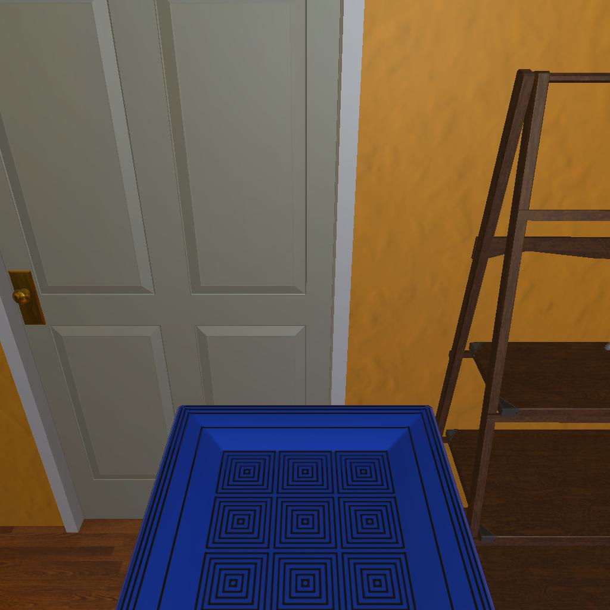

---------------------------------------------------------task: 3---------------------------------------------------------
--------------------------------------------------------------------------------------------------------------------------------------------------------------------
--------------------------------------------------------------------------------------------------------------------------------------------------------------------
Step:--------------------------------------------------------------------------9-------------------------------------------------------------------------------
----------------------------------------
VLM Prompt:
Image1:
**Instruction**
1. Analyze the provided image to identify all visible household objects, focusing on those relevant to the task description "look at plate under the floorlamp."
2. Use the analysis of the image and the task hint "The agent must find an object of the desired type, locate and turn on a light source with the desired object in-hand." to answer the question: what is the most reasonable action in the choices for the task description "look at plate under the floorlamp"?
4. Decide and write the answer using the template: The answer is: (i): , where i is the real number. If there is no desired object in the image, search every place based on **Initial Observation** to find the object. And if no one is exactly correct, choose a similar answer.
**Initial Observation**
You are in the middle of a room. Looking quickly around you, you can see armchair (1), garbagecan (1), tvstand (1), shelf (1-5), sofa (1), coffeetable (1), sidetable (1-2), drawer (1)
**Answer Choices**
(1): go to armchair 1
(2): go to garbagecan 1
(3): go to tvstand 1
(4): go to shelf 1
(5): go to shelf 2
(6): go to sofa 1
(7): go to coffeetable 1
(8): go to sidetable 1
(9): go to sidetable 2
(10): go to drawer 1
(11): go to shelf 3
(12): go to shelf 5
(13): put plate 1 in/on shelf 4
(14): examine plate 1
**Answer**
Let's think step by step by following the instructions.
----------------------------------------
----------------------------------------
Original Response:
Firstly, we analyze the image provided. Visible household objects include a door, a ladder, and a tray or plate (hard to identify precisely) on the floor. No floorlamp is visible in the image.
Based on the task description "look at plate under the floorlamp," we need to locate a plate and a floorlamp. However, the initial observation does not list a floorlamp, and the image does not show one either. Since the image does not provide all the information we need, we must rely on the initial observation, which also does not mention a floorlamp.
Given the task hint, we know we must find an object of the desired type (a plate) and locate and turn on a light source with the object in hand. Since the floorlamp is not mentioned anywhere, we can assume it is in the vicinity but not visible in the image or the initial observation.
The most reasonable action to complete the task would be to first find a plate. The only option that involves a plate is (14): examine plate 1. Therefore, we should select this action to proceed with the task.
The answer is: (14): examine plate 1.
----------------------------------------
----------------------------------------
>>> Refine Original VLM Response and Get Pure Action: examine plate 1
----------------------------------------
-----------------------------------------------------------------
Running time: 17.51183009147644 seconds
Total Money: 0.78982
-----------------------------------------------------------------
-----------------------------------------------------------------
Text Observation:This is a normal plate 1
-----------------------------------------------------------------
UNSUCCEED